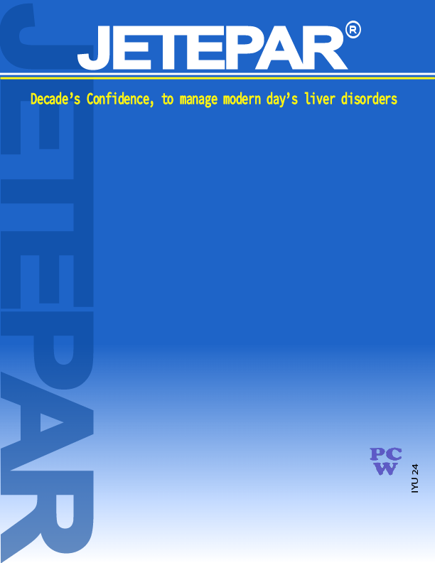
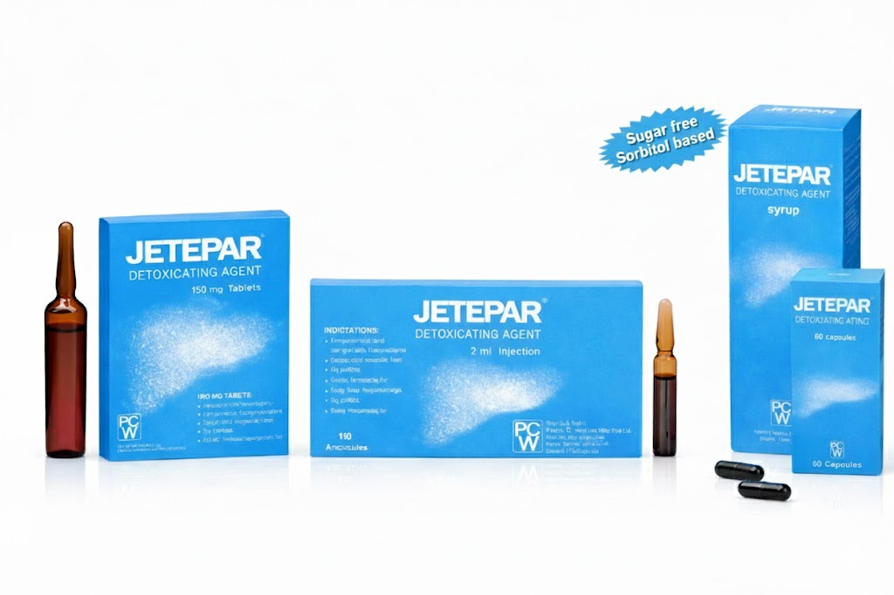
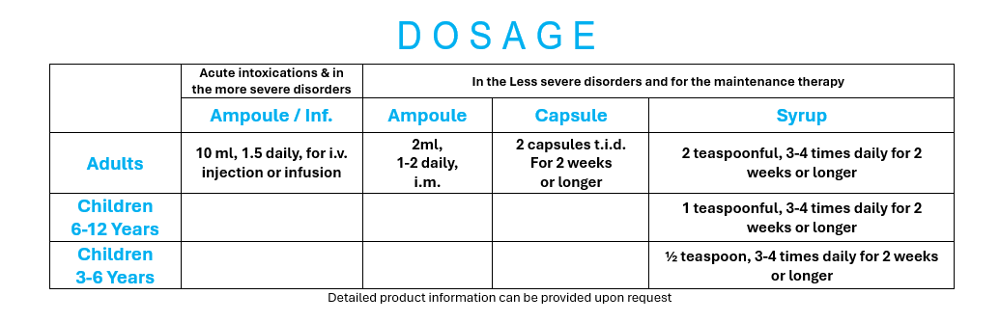

- Improves hepatic Functionality and liver enzymes
- Enhances Virological / Metabolic outcomes
- Protects liver from damages and Fibrosis
- Backed by proven scientific publications
- Available in complete range at most affordable cost
- Acute & Chronic Hepatitis
- Fatty Liver Disease
- Liver Cirrhosis
- Cholecystitis
- Toxic Ingestion
- Toxic Metabolic Hepatopathy
- Dili - Drug Induced Liver Injuries

